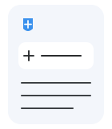
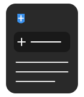
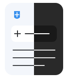

How would you like GOV.CY to look? Choose an appearance for this browser. Your choice is saved and can be changed later.  Light  Dark  Use device settings. Automatically use your device's light or dark appearance. Save preference